The Gradebook Channel is an interface for scores, grades, exam results, and assignments associated with the current offering. As an instructor, you can view all enrolled members' scores for each offering. As a member, you can view only your scores for a particular offering.
View Scores [default] - shows a listing of users associated with the current offering cross-indexed with exams and/or assignments. Where applicable, a grade is displayed for each user for the exam or assignment. User names are listed down the left side, and total grades down the right side. In between are displayed columns, each column representing an exam or assignment. Underneath the user rows are two rows that display the calculated mean and median of the columns.
- displays all exams or assignments submitted for the selected column.
In the heart of the Gradebook channel, you will see a matrix of columns and rows. Each row represents a user who is enrolled in the current offering. The columns, however, represent exams or assignments that have been created for this offering. Through the duration of a course offering, a user's results on any number of exams or assignments will be tabulated to determine that user's comprehension of the materials.
|
Gradebook Setup
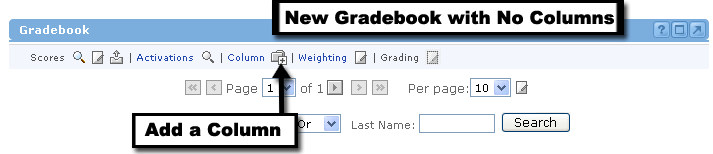
At the beginning of offering creation, instructors will want to set up their gradebooks. The first thing to do is to add columns to the gradebook. The screenshot above shows a gradebook with no columns added.
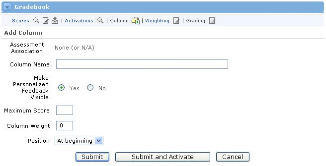
Adding a Column
To add a column, first locate the Gradebook channel, then follow these steps:
- Click the Add Column icon at the top of the channel.
- If this column will be associated with an exam, select the exam from the Assessment Association drop-down menu. If there is no drop-down menu, then there are no assessments (exams) available for selection.
- Type the name of the column in the Column Name field. This name will appear vertically above the column, so it should be something that distinguishes this column from any other, perhaps the name of a specific exam or assignment (i.e. "Tropical Weather Exam" or "Rain Cloud Assignment").
- For the Make Feedback Visible row, click Yes if you would like the users to be able to view feedback after the column is graded. Click No if you do not want any feedback delivered to users.
- Determine a Maximum Score for this column and enter it in the text field. The maximum score is the best possible score a user can obtain.
- Determine a Column Weight for this column. The column weight is a way to place greater importance on one column over others. You can read more about column weights in the Edit All Gradebook Column Weights lesson of this unit.
- The Position pull-down menu allows you to place your column anywhere you desire. The first column will always be placed "At Beginning," but any additional columns can be placed before or after this point.
- When all selections have been made, simply click the Submit button. (The Submit and Activate button will be explained later, as a part of the Activate an Assignment lesson of this unit.)
- You will now see the gradebook with your new column as placed.
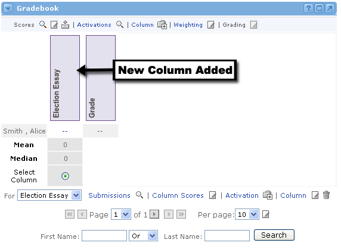
|
Edit Assignment Column Information
Editing a Column
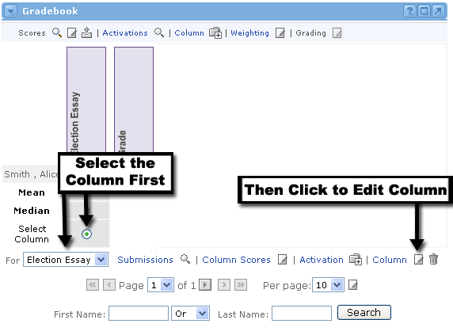
After you have created a column in the Gradebook, you may later decide to change some of the information you provided. You can do this at any time. Just follow these steps:
- In the Gradebook channel, locate the column you would like to edit.
- Click the radio button beneath the column OR select the column from the drop-down menu at the bottom of the Gradebook channel. By selecting the column in either of these methods, the alternate method will automatically be selected as well.
- Once your column is selected, click the Column link or the Edit icon next to it at the bottom of the Gradebook channel.
- You will now see the column information in an editable form. Here you can make changes to the column details.
- When you are finished editing, click the Submit button.
- You should now see the Gradebook with the updated column.
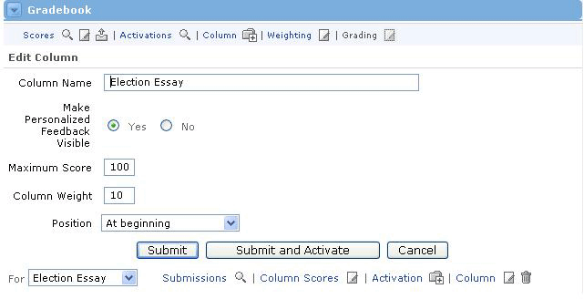
Activate a Gradebook Column
What is Activation?
Activation is simply the process by which assignments and assessments are made available to users in the offering. Once the sponsor (or instructor) activates an assignment, enrolled users can access and work on it. When users are finished with the assignment, they can submit it back to the sponsor for grading.This also applies to exams. The sponsor must first activate an exam before the enrolled users can take it and submit it for grading.
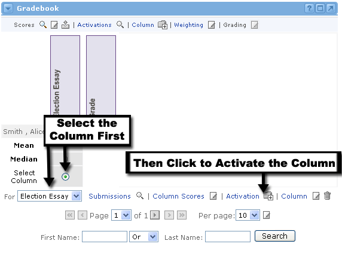
Activating a Gradebook Column
To activate any column in the Gradebook, follow these steps:
- In the Gradebook channel, locate the column you would like to activate.
- Click the radio button beneath the column OR select the column from the drop-down menu at the bottom of the Gradebook channel. By selecting the column in either of these methods, the alternate method will automatically be selected as well.
- Once your column is selected, click the Activate link at the bottom of the Gradebook channel.
- You should now see the Activate Assessment screen. If there is an assessment associated with this column from the course curriculum, it will be listed in the first row.
- The Column Name cannot be changed here, but you should take note of it to verify that you are activating the correct column.
- For the Activation Link row, you should select No File to Link if there is not a file or online resource to associated to the assignment, select Link to URL if this activation is already located online. If you want to upload a file for users to review or edit and submit for grading, select the Uploaded File button. Then use the Browse button to locate that file on your computer. These fields are left blank for Assessment activations.
- The Activation Period section allows you to set the dates and times when users can begin accessing this assignment or exam. You must also set the end dates and times (or deadline) when users will no longer be able to access the assignment or exam.
- The Activation For section allows you to activate this column for the all enrolled users, or only for a select few. If you only want to activate this column for two or three people, click on the first person's name, then hold the CTRL button down while selecting additional users.
- If you want users to be able to submit multiple attempts at this assignment or exam, enter the total number of attempts you want to allow in the Attempts Permitted field.
- Once you are satisfied with all of your selections, click the Submit button.

|
|
If Virtuoso has been integrated with the Academus Groupware, you will also have the option to set assessment duration from this activation screen.
|
Viewing All Activations
As more and more columns become activated for enrolled users, you may eventually become confused as to which columns are activated and which are not. In this scenario, you can choose to view all activations. This will give you the complete picture as to which assignments and exams are currently active. Here's how to view all activations:
- In the Gradebook channel, locate the Activations link at the top of the channel.
- Click Activations link, or the magnifying glass icon next to it.
- You will now see the Current Activations screen.
|
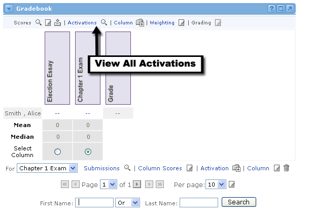
This screen is broken up into four sections:
- Column Name - This is the name of the column on the main view
- Start Time & Date - This is the time when the activation begins
- End Time & Date - This is the time when the activation ends
- Activation Link - Click to access the assessment, URL, or uploaded file associated to this activation.

View Submissions for an Assignment
This will allow you to see which enrolled users have submitted an assignment or exam for any specific column. To do this, follow these steps:
- In the Gradebook channel's main view, locate the column for the assignment and/or exam submissions that you would like to see.
- Click the radio button beneath the column OR select the column from the drop-down menu at the bottom of the Gradebook channel. By selecting the column in either of these methods, the alternate method will automatically be selected as well.
- Once your column is selected, click the Submissions link at the bottom of the Gradebook channel.
- You should now see that the Gradebook channel has been broken into two parts. The top part lists all of the enrolled users who have submitted an assignment or assessment for this column. Click the link to the right of a names to view that user's submission.
- The lower part of the Gradebook channel now lists all the enrolled users who haven't yet submitted this assignment or exam.
- Click the magnifying glass icon at the top of the channel to return to the main Gradebook view.

|
|
Clicking on a submission link will open the file submitted by the user.
|
|
Submit Assignments and Feedback
When an assignment becomes activated, a user within the offering can go to his or her Gradebook channel to download the assignment. The user should then complete and save the assignment to his or her local computer. Once finished, a user can send the file to the sponsor of the offering through the Gradebook channel. The sponsor, upon grading the assignment, may then choose to provide feedback to the user. This lesson shows the life cycle of an assignment as it travels from the user to the sponsor, and later returns to the user with the sponsor's feedback. |
Downloading the Assignment
- After the sponsor activates an assignment, a user can download it by going to the Gradebook channel. To begin, simply click on the Activations link at the top of the window to view all current assignments.

2. A list of currently active assignments appears.
3. Click the link in the Activation Link column to download and/or view the assignment.

|
|
|
Assignments exist in two formats: file or webpage (URL). Files must be downloaded. In some instances depending on the nature of the assignment these files will be updated, saved, and submitted back to the sponsor. URLs are online webpages where the assignment resides.
|
Completing and Submitting the Assignment
Once the assignment has been downloaded, it is up to each user to complete it and save it to their computer. When this is accomplished, a user can submit the assignment back to the sponsor for grading. To do so, follow these steps:
- From the main Gradebook view, click on the double-dash link for the appropriate assignment column.
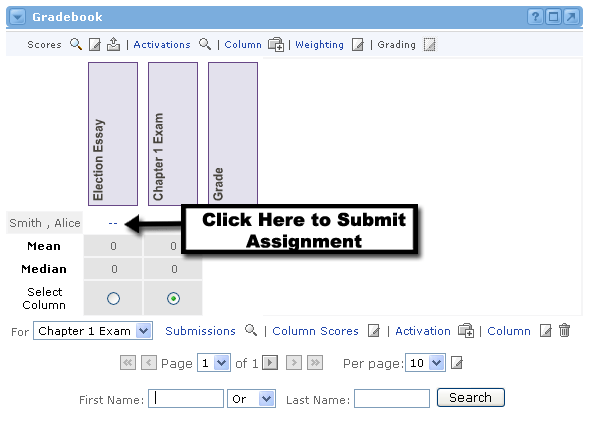
2. You will see the Assignment Details screen.
3. Choose the Assignment from the drop-down menu at the top.
4. In the Submission section, use the Browse button to locate the assignment file on your computer.
5. Add any comments, if desired, in the Comment text area.
6. Click the Submit button to send your assignment to the offering sponsor (or instructor).

Providing Feedback to Assignment Submissions
Sponsors, TA or other privileged users can send graded assignment files back to the users in the offering, along with valuable comments and feedback. To do so, a sponsor should follow these steps:
- Go to the main Gradebook view
- To view a user's submitted assignment, click the Submissions link.
- You will now see the Online Assignment Submissions screen.
- Click a file in the Submission column to view a user's assignment submission.
- To submit feedback to a user, click the double-dash link in the Score column for the appropriate assignment.
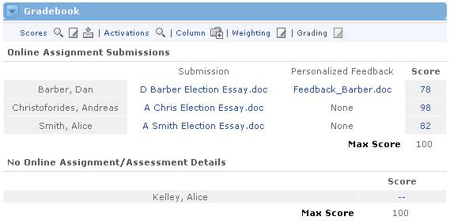
6. You will now see the Assignment Details screen for sending feedback.
7. Confirm that the Assignment and Member fields are correct.
8. Enter a score in the Score text field.
9. In the Feedback section, type any comments in the Comment text area.
10. To send a graded file back to the user, click the Browse button to locate the file on your computer.
11. Once all fields are finished, click the Submit button.

Viewing Assignment Feedback
After a sponsor has submitted feedback for an assignment, the user can view this feedback through the Gradebook. Follow these steps:
- Go to the Gradebook's main page, and click on the score for the appropriate assignment (see picture below).
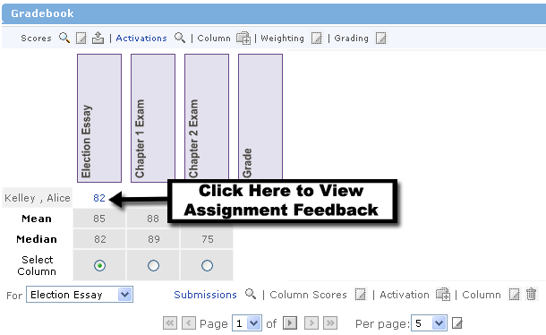
2. You will now see the Assignment Details screen.
3. Scroll down to the Feedback section to read any comments left by the sponsor.
4. If the instructor has included a file with feedback, a link to open and/or download the feedback file will be provided. To view the graded file, click on the File Name link.
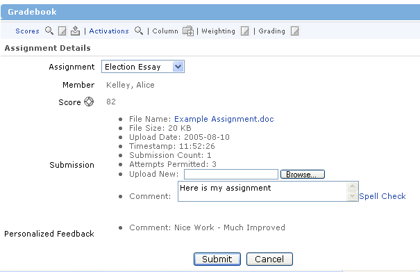
Editing Scores
After your enrolled users have submitted assignments and/or exams to you either online or through a traditional classroom setting, you'll want to record their scores. You can do that by editing the scores in the Gradebook channel.
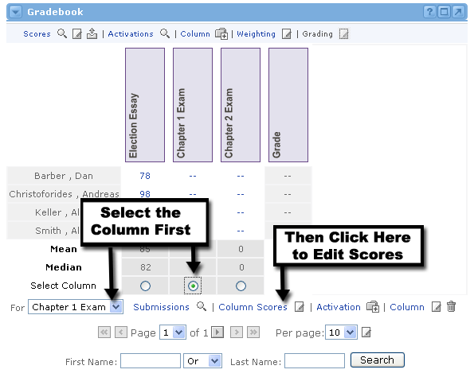
- In the Gradebook channel's main view, locate the column for the scores that you would like to edit.
- Click the radio button beneath the column OR select the column from the drop-down menu at the bottom of the Gradebook channel. By selecting the column in either of these methods, the alternate method will automatically be selected as well.
- Once your column is selected, click the Column Scores link or the Edit icon next to it at the bottom of the Gradebook channel.
- You should now only see the column you have selected, with each user's scores in editable text boxes.
- Add or change the scores for any of the users that you deem necessary. You don't have to give each user a score at this time.
- When you are satisfied with the scores you have added or edited, click the Update button.
- You will now see the main Gradebook view, with updated scores for the column you selected.
|
|
Virtuoso assessment scores will be imported automatically.
|

Mean and Median: What do they mean?
Immediately beneath the list of enrolled users, you will see a Mean score and a Median score.
The Mean score is the average of all users' scores. This figure is the sum of all scores divided by the number of users with a score. If a user does not have a score, they are not computed in with the mean score for the class.
The Median score is figured by taking the middle score of all users with a score. The user with this score will have equal numbers of users who scored better and users who scored worse. This score is usually not the same as the Mean score.
What are Gradebook Column Weights?
Gradebook Weights are a way to place a greater importance on one or more assignments or exams over others within a single offering. For example, imagine that you created 8 exams in your offering, each with a maximum score of 100. Later, you decided that because Exam #4 was the midterm, it should be worth twice as much. At this point it would be very complicated to go back and change the maximum score to 200 for this column, as well as doubling each user's results. With Column Weights, all you have to do is double the weight value for this column. The Gradebook automatically adjusts each user's final grade for the offering.
|
|
If you have set all of your column weight values to zero, your final grades will not be calculated.
|
How Do Column Weights Affect the Final Grade?
Here's the formula for calculating the final grade:
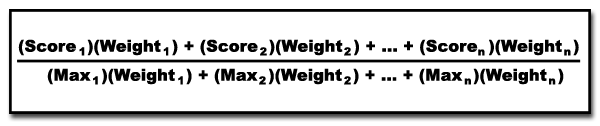
|
Here it is in clearer language. First, you multiply a user's Score in the first column by the Weight assigned to that column. Repeat this for all columns. Then add all of those products together and call this number X. Now, find the Maximum Possible Score in the first column and multiply it by the Weight assigned to that column. Repeat this for all columns. Then add all of those products together and call this number Y. Finally, divide X by Y to get the user's Grade in the offering. |
Editing All Column Weights |
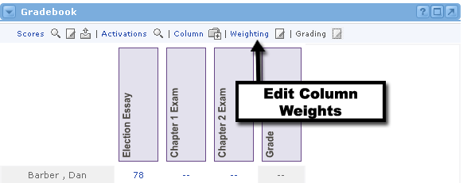
To edit the column weights in the Gradebook, follow these steps:
- Locate the gradebook and click the Weighting link (or the Edit icon next to it) at the top of the channel.
- You will now see an editable list of all Column Weights.
- Change the Column Weights as you desire. Remember, a higher weight amount in a column will put a greater importance on that column when the final grade is computed. When you are satisfied with all of your changes, click the Submit button.
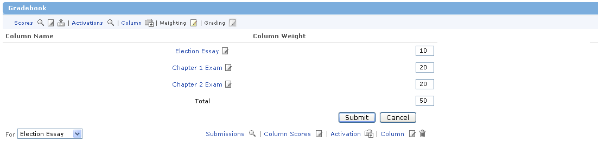
Edit All Gradebook Scores
It may become necessary or desirable to edit all of the scores in your gradebook at once, rather than having to edit each column separately. If this is the case, simply follow these steps:

- Locate the gradebook and click the Edit icon at the top of the channel next to the Scores link.
- You will now see all scores listed in editable text fields.
- Edit the scores as needed. Click the Update button when finished.
- You will now see the updated Gradebook page. Notice that the Mean, Median, and final Grade scores have also been recalculated

Exporting the Gradebook
The time may come when you want to export the Gradebook from Academus into an external program (such as a spreadsheet). Academus can help you export the gradebook information into a pipe-delimited text file. This means that every cell within the table will be separated by the pipe "|" character. Each row will be separated by a carriage return.
If you would like to export the gradebook in this manner, simply follow these steps:
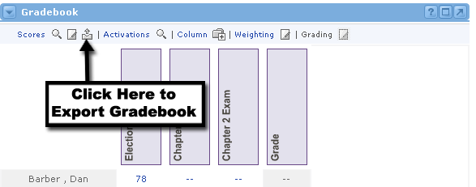
- Locate the Gradebook channel and click the Export icon at the top of the channel next to the Scores link.
- A new window will open, showing the name of the export text file. You will also be prompted to save this file on your computer.
- Select a location on your computer and save the file.
- Once you save it, the new window will close itself.
- You now have the gradebook in .txt format.
- Follow the instructions within any external program (such as Excel) for importing a text file. Remember that this table is "pipe-delimited."